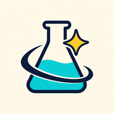

INTERACTIVE SCIENCE SLIDES
교과서 개념을 손으로 움직여 보며 배우는 인터랙티브 수업 슬라이드
보고, 끌어 보고, 다시 생각하기

학생
클래스룸에 올라온 과목 링크를 누르면 바로 들어가요. 선생님이 화면에 참여 코드를 띄웠다면 여기에 넣어요.
선생님 화면의 QR을 찍거나 받은 수업 링크를 붙여 넣어도 돼요. 한 번 들어가면 이 기기(앱)가 기억해요.
로그인은 필요 없어요. 휴대폰은 가로로 돌리면 크게 보여요.
선생님
자료 카드의 선생님 화면에는 장마다 발표자 메모(발문·예시 답·지도 유의점)가 있어요.
S 발표자 화면 · → 다음 단계 · F 전체 화면 · C 판서 · B 칠판 · Esc 한눈에 보기
파일 하나에 다 들어 있어 내려받으면 인터넷 없이도 열려요(글꼴만 기본 글꼴로 바뀌고, 수업방은 인터넷이 있어야 해요). 복습·인쇄용으로는 장마다 정답까지 연 PDF도 있어요.
체험하기는 학생 화면을 혼자 넘겨 보며 그림 속 자석·코일·단추를 직접 움직여 보는 거예요.
통합과학2 · Ⅰ. 변화와 다양성
성취기준 [10통과2-01-01] 지질 시대를 통해 지구 환경이 끊임없이 변화해 왔으며 이러한 환경 변화가 생물다양성에 미치는 영향을 추론할 수 있다.
공룡이 살던 때와 그곳의 환경을 무엇으로 알 수 있을까?
지질 시대마다 환경과 생물은 어떻게 달랐을까?
대륙이 움직이면 지구 환경과 생물은 어떻게 달라질까?
생물 대멸종은 왜 일어났고, 그 뒤 생물은 어떻게 달라졌을까?
2026-10-31 고침
통합과학2 · Ⅰ. 변화와 다양성
성취기준 [10통과2-01-02] 변이의 발생과 자연선택 과정을 통해 생물의 진화가 일어나고, 진화의 과정을 통해 생물다양성이 형성되었음을 추론할 수 있다.
한 종의 쥐가 사는 곳마다 털빛이 다른 까닭은 무엇일까?
노란 도화지 위에서는 어떤 색 초콜릿이 끝까지 남을까?
갈라파고스 제도에는 왜 부리가 서로 다른 핀치가 여러 종 살까?
2026-10-31 고침
통합과학2 · Ⅰ. 변화와 다양성
성취기준 [10통과2-01-02] 변이의 발생과 자연선택 과정을 통해 생물의 진화가 일어나고, 진화의 과정을 통해 생물다양성이 형성되었음을 추론할 수 있다.
생물다양성은 왜 지켜야 할까?
생물 한 종이 사라지면 생태계와 우리에게 무슨 일이 생길까?
생물다양성을 지키려고 우리는 무엇을 할 수 있을까?
2026-10-31 고침
통합과학2 · Ⅰ. 변화와 다양성
성취기준 [10통과2-01-03] 자연과 인류의 큰 변화를 가져온 광합성, 화석 연료 사용, 철의 제련 등에서 공통점을 찾아 산화와 환원을 이해하고, 생활 주변의 다양한 변화를 산화와 환원의 특징과 규칙성으로 분석할 수 있다.
철검을 붉게 녹슬게 한 기체는 무엇이고, 그때 무슨 일이 일어났을까?
산소가 끼어들지 않는 반응도 산화와 환원이라고 할 수 있을까?
2026-10-31 고침
통합과학2 · Ⅰ. 변화와 다양성
성취기준 [10통과2-01-04] 대표적인 산·염기 물질의 특징을 알고, 산과 염기를 혼합할 때 나타나는 중화 반응을 생활 속에서 이용할 수 있다.
레몬즙과 식초에는 어떤 공통점이 있을까?
산과 염기의 수용액에는 왜 전류가 흐를까?
염산과 NaOH 수용액을 섞으면 온도는 어떻게 변할까?
산과 염기가 만나면 무엇이 생기고, 생활에서는 어떻게 쓸까?
2026-10-31 고침
통합과학2 · Ⅰ. 변화와 다양성
성취기준 [10통과2-01-05] 생활 주변에서 에너지를 흡수하거나 방출하는 현상을 찾아 에너지의 흡수 방출이 우리 생활에 어떻게 이용되는지 토의할 수 있다.
드라이아이스 곁의 아이스크림은 왜 녹지 않을까?
손난로는 따뜻해지고 냉찜질 팩은 차가워지는 까닭은?
불 없이 물과 산화 칼슘만으로 음식을 익힐 수 있을까?
2026-10-31 고침
통합과학2 · Ⅱ. 환경과 에너지
성취기준 [10통과2-02-01] 생태계구성요소를 이해하고 생물과 환경 사이의 상호 관계를 설명할 수 있다.
지렁이가 많은 밭에서는 왜 작물이 잘 클까?
생물과 환경은 서로 어떤 영향을 주고받을까?
2026-10-31 고침
통합과학2 · Ⅱ. 환경과 에너지
성취기준 [10통과2-02-02] 먹이 관계와 생태피라미드를 중심으로 생태계평형이 유지되는 과정을 이해하고, 환경의 변화가 생태계에 미칠 수 있는 영향에 대해 협력적으로 소통할 수 있다.
참새가 줄어들자 왜 메뚜기가 많아졌을까?
참새와 메뚜기의 수는 세대가 지나며 어떻게 달라질까?
환경이 크게 바뀌면 생태계에는 어떤 일이 생길까?
2026-10-31 고침
통합과학2 · Ⅱ. 환경과 에너지
성취기준 [10통과2-02-03] 온실 효과 강화로 인한 지구 온난화의 메커니즘을 이해하고, 엘니뇨, 사막화 등과 같은 현상이 지구 환경과 인간 생활에 미치는 영향과 대처 방안을 분석할 수 있다.
대기 중 온실 기체가 늘어나면 지구의 기온은 왜 높아질까?
사막화와 엘니뇨는 환경과 사람의 생활을 어떻게 바꿀까?
2100년의 지구는 어떤 모습일까?
2026-10-31 고침
통합과학2 · Ⅱ. 환경과 에너지 › 2. 에너지
성취기준 [10통과2-02-04] 태양에서 수소 핵융합 반응을 통해 질량 일부가 에너지로 바뀌고, 그중 일부가 지구에서 에너지 흐름을 일으키며 다양한 에너지로 전환되는 과정을 추론할 수 있다.
2026-10-31 고침
통합과학2 · Ⅱ. 환경과 에너지 › 2. 에너지
성취기준 [10통과2-02-05] 발전기에서 운동 에너지가 전기 에너지로 전환되는 과정을 이해하고, 열원으로서 화석 연료, 핵에너지를 이용하는 발전소가 인간 생활에 미치는 영향을 조사·발표할 수 있다.
소형 발전기는 어떻게 전기를 만들까?
전지 없는 코일에 전류가 흐르는 까닭은?
전기를 계속 만들려면?
우리 집 전기는 무엇으로 만들까?
2026-10-31 고침
통합과학2 · Ⅱ. 환경과 에너지 › 2. 에너지
성취기준 [10통과2-02-06] 에너지 효율의 의미와 중요성을 이해하고, 지속가능한 발전과 지구 환경 문제 해결에 신재생 에너지 기술을 활용하는 방안을 탐색할 수 있다.
솔라 임펄스 2호는 연료 없이 어떻게 날았을까?
같은 밝기인데 왜 어떤 전구는 더 뜨거울까?
지금처럼 써도 미래 세대가 쓸 에너지가 남을까?
우리 학교가 쓸 전기를 스스로 만들 수 있을까?
2026-10-31 고침
통합과학2 · Ⅲ. 과학과 미래 사회
성취기준 [10통과2-03-01] [10통과2-03-02] 감염병의 진단, 추적 등을 사례로 과학의 유용성을 설명하고, 미래 사회 문제 해결에서 과학의 필요성에 대해 논증할 수 있다. 빅데이터를 과학·기술·사회에서 사용하고 있는 사례를 조사하고, 빅데이터 활용의 장점과 문제점을 추론할 수 있다.
2026-10-31 고침
통합과학2 · Ⅲ. 과학과 미래 사회
성취기준 [10통과2-03-03] [10통과2-03-04] 인공지능 로봇, 사물 인터넷 등과 같이 과학기술의 발전을 인간 삶과 환경 개선에 활용하는 사례를 찾고, 이러한 과학기술의 발전이 미래 사회에 미치는 유용성과 한계를 예측할 수 있다. 과학기술의 발전 과정에서 발생할 수 있는 과학 관련 사회적 쟁점(SSI)과 과학기술 이용에서 과학 윤리의 중요성에 대해 논증할 수 있다.
로봇과 같은 과학기술의 발달은 우리 삶을 어떻게 바꾸고 있을까?
과학기술이 발전하면서 개인 정보 보호는 왜 더 중요해졌을까?
2026-10-31 고침